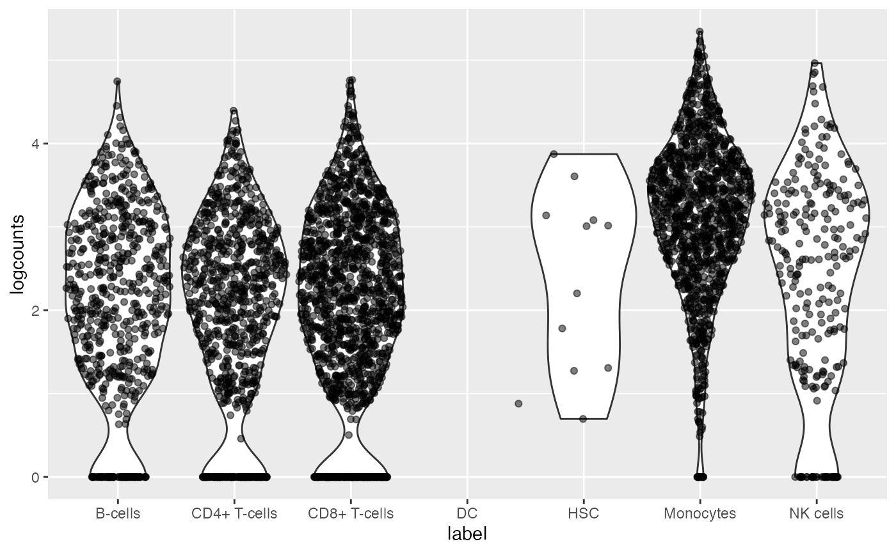

vizWithSCE.RmdvizWithSCE is an R package that assists with the visualization of the integration of bulk DE results tables with pre-processed scRNA-seq datasets available on Bioconductor. vizWithSCE currently takes two arguments, a list containing res, dds, and a SingleCellExperiment (sce) as selected by the user and a second argument which. The which argument is the gene to use for the violin plot, represented as a number that corresponds to the gene with the n-th smallest p-value, e.g., 1 for the gene with lowest p-value, etc.
We first load gene-summarized RNA-seq counts.
library(airway)For our workflow, we used the bulk dataset “airway”, which contains four human airway smooth muscle cell lines treated with dexamethasone, a steroid used to treat inflammation. This pre-processed dataset is available on Bioconductor. Here we filter to at least 3 samples with a count of 10 or higher, and then perform differential expression analysis.
Mike: why did you change the rownames?
library(DESeq2)
data(gse)
levels(gse$condition) <- c("untrt", "trt")
dds <- DESeqDataSet(gse, design = ~donor + condition)
keep <- rowSums(counts(dds) >= 10) >= 3
dds <- dds[keep,]
dds <- DESeq(dds)
res <- results(dds)
rownames(res) <- sub("\\..*","",rownames(res))## using 'avgTxLength' from assays(dds), correcting for library sizeintegrateWithSingleCell
We run integrateWithSingleCell and pick number 8 from the dataset selection as our single-cell dataset. Within PBMC there are nine different scRNA-seq datasets. We chose the dataset pbmc4k, which contains roughly 4 thousand cells. This pre-processed dataset is available on Bioconductor.
dat <- integrateWithSingleCell(res, dds)Mike: what is scater used here for?
library(scater)
dat$sce <- scater::logNormCounts(dat$sce)
sce2 <- dat$sceHere we convert the rownames from Ensembl to symbol, to match with the cell annotation reference dataset, described below.
Mike: what is celldex used for here? what is SingleR used here for?
Mike: after this step what has changed in dat?
Mike: what does the following plot tell us about the gene with the 2nd smallest p-value? Which single cells is it expressed in?
library(vizWithSCE)
vizWithSCE(dat, which=2)
Mike: what else would you like to do with the package? You can list anything you like here.
## R version 4.0.4 (2021-02-15)
## Platform: x86_64-apple-darwin17.0 (64-bit)
## Running under: macOS Big Sur 10.16
##
## Matrix products: default
## BLAS: /Library/Frameworks/R.framework/Versions/4.0/Resources/lib/libRblas.dylib
## LAPACK: /Library/Frameworks/R.framework/Versions/4.0/Resources/lib/libRlapack.dylib
##
## locale:
## [1] en_US.UTF-8/en_US.UTF-8/en_US.UTF-8/C/en_US.UTF-8/en_US.UTF-8
##
## attached base packages:
## [1] parallel stats4 stats graphics grDevices utils datasets
## [8] methods base
##
## other attached packages:
## [1] scater_1.18.6 ggplot2_3.3.3
## [3] TENxPBMCData_1.8.0 HDF5Array_1.18.1
## [5] rhdf5_2.34.0 DelayedArray_0.16.2
## [7] Matrix_1.3-2 SingleCellExperiment_1.12.0
## [9] SummarizedExperiment_1.20.0 Biobase_2.50.0
## [11] GenomicRanges_1.42.0 GenomeInfoDb_1.26.2
## [13] IRanges_2.24.1 S4Vectors_0.28.1
## [15] BiocGenerics_0.36.0 MatrixGenerics_1.2.1
## [17] matrixStats_0.58.0 vizWithSCE_0.0.4
##
## loaded via a namespace (and not attached):
## [1] ggbeeswarm_0.6.0 colorspace_2.0-0
## [3] ellipsis_0.3.1 rprojroot_2.0.2
## [5] scuttle_1.0.4 XVector_0.30.0
## [7] BiocNeighbors_1.8.2 fs_1.5.0
## [9] farver_2.1.0 bit64_4.0.5
## [11] interactiveDisplayBase_1.28.0 AnnotationDbi_1.52.0
## [13] fansi_0.4.2 splines_4.0.4
## [15] sparseMatrixStats_1.2.1 cachem_1.0.4
## [17] geneplotter_1.68.0 knitr_1.31
## [19] polyclip_1.10-0 jsonlite_1.7.2
## [21] annotate_1.68.0 dbplyr_2.1.0
## [23] ggforce_0.3.3 shiny_1.6.0
## [25] BiocManager_1.30.10 compiler_4.0.4
## [27] httr_1.4.2 assertthat_0.2.1
## [29] fastmap_1.1.0 BiocSingular_1.6.0
## [31] later_1.1.0.1 tweenr_1.0.2
## [33] htmltools_0.5.1.1 tools_4.0.4
## [35] rsvd_1.0.3 gtable_0.3.0
## [37] glue_1.4.2 GenomeInfoDbData_1.2.4
## [39] dplyr_1.0.5 rappdirs_0.3.3
## [41] Rcpp_1.0.6 jquerylib_0.1.3
## [43] pkgdown_1.6.1 vctrs_0.3.6
## [45] rhdf5filters_1.2.0 ExperimentHub_1.16.0
## [47] DelayedMatrixStats_1.12.3 xfun_0.22
## [49] stringr_1.4.0 beachmat_2.6.4
## [51] irlba_2.3.3 mime_0.10
## [53] lifecycle_1.0.0 XML_3.99-0.5
## [55] AnnotationHub_2.22.0 zlibbioc_1.36.0
## [57] MASS_7.3-53 scales_1.1.1
## [59] ragg_1.1.2 promises_1.2.0.1
## [61] RColorBrewer_1.1-2 yaml_2.2.1
## [63] curl_4.3 gridExtra_2.3
## [65] memoise_2.0.0 sass_0.3.1
## [67] stringi_1.5.3 RSQLite_2.2.3
## [69] highr_0.8 BiocVersion_3.12.0
## [71] genefilter_1.72.1 desc_1.3.0
## [73] BiocParallel_1.24.1 rlang_0.4.10
## [75] pkgconfig_2.0.3 systemfonts_1.0.1
## [77] bitops_1.0-6 evaluate_0.14
## [79] lattice_0.20-41 purrr_0.3.4
## [81] Rhdf5lib_1.12.1 labeling_0.4.2
## [83] bit_4.0.4 tidyselect_1.1.0
## [85] magrittr_2.0.1 DESeq2_1.30.1
## [87] R6_2.5.0 generics_0.1.0
## [89] DBI_1.1.1 pillar_1.5.0
## [91] withr_2.4.1 survival_3.2-7
## [93] RCurl_1.98-1.2 tibble_3.1.0
## [95] crayon_1.4.1 utf8_1.1.4
## [97] BiocFileCache_1.14.0 rmarkdown_2.7
## [99] viridis_0.5.1 locfit_1.5-9.4
## [101] grid_4.0.4 blob_1.2.1
## [103] digest_0.6.27 xtable_1.8-4
## [105] httpuv_1.5.5 textshaping_0.3.3
## [107] munsell_0.5.0 viridisLite_0.3.0
## [109] beeswarm_0.3.1 vipor_0.4.5
## [111] bslib_0.2.4